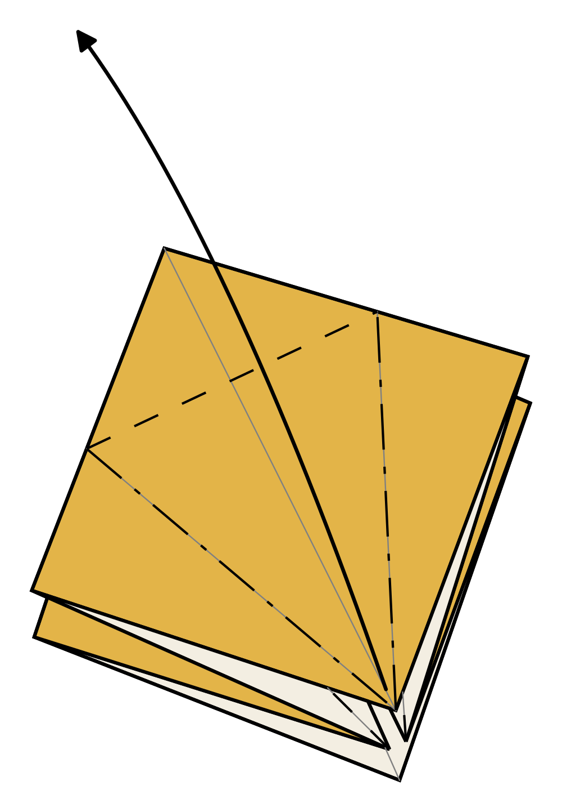
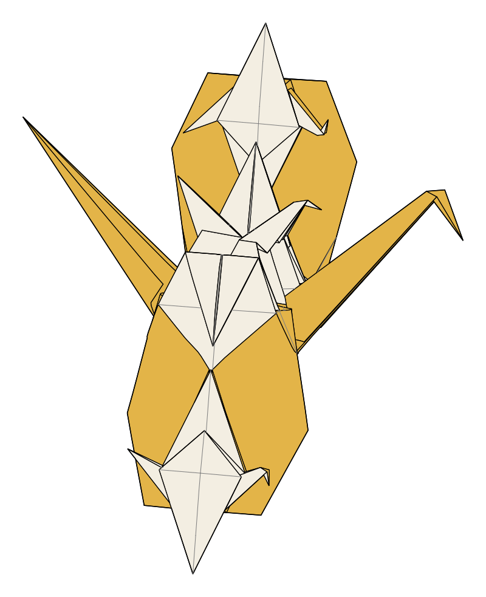
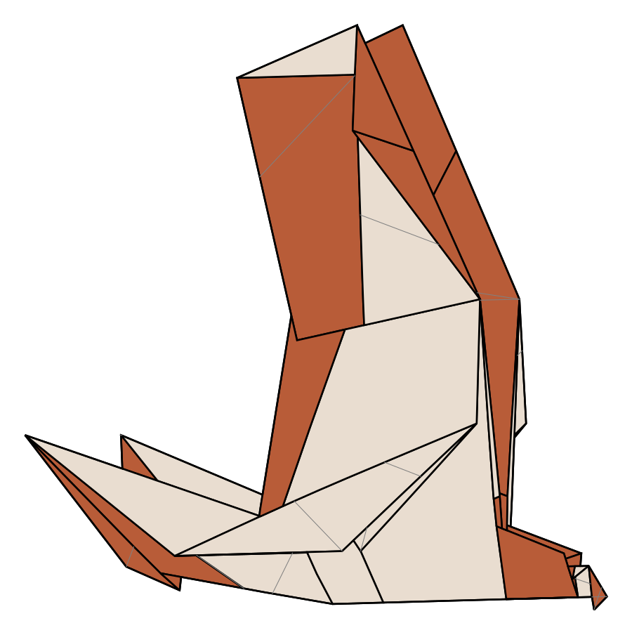
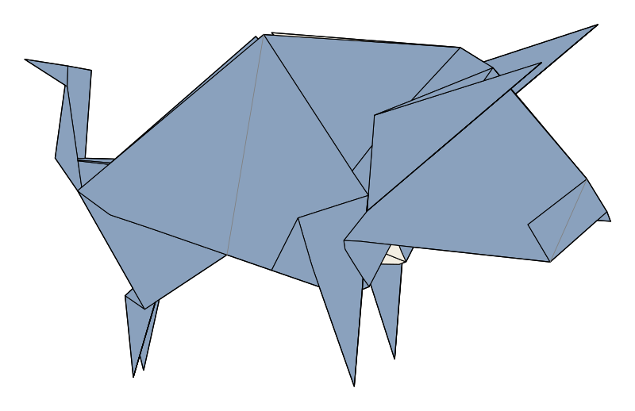
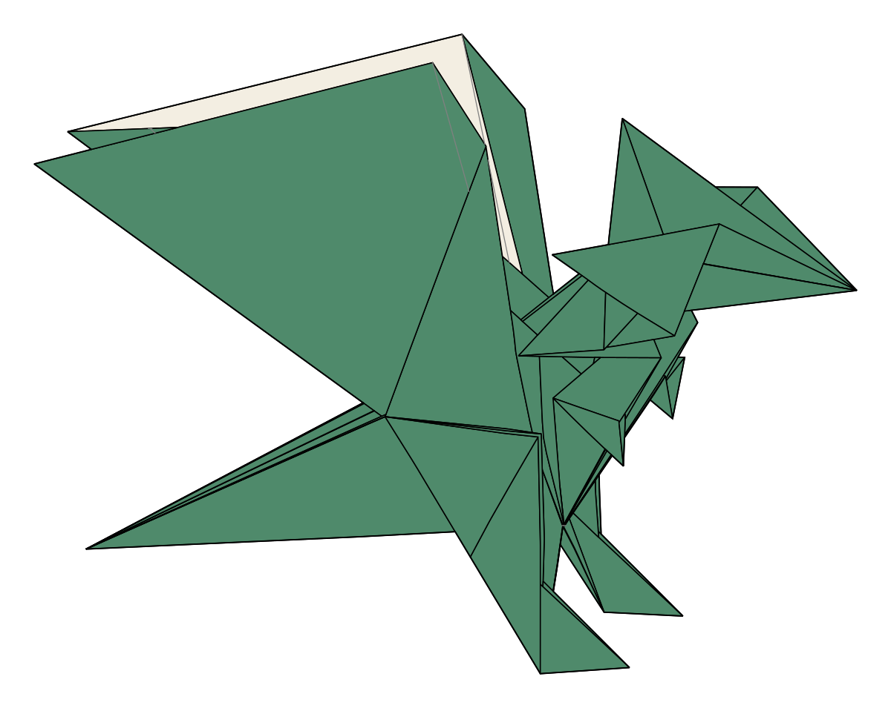
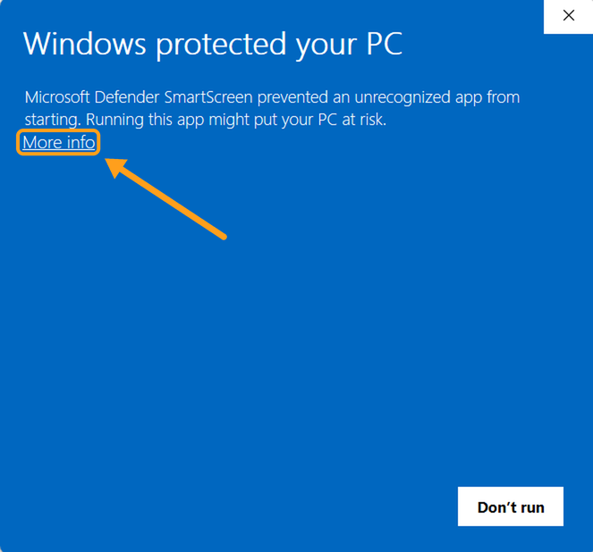
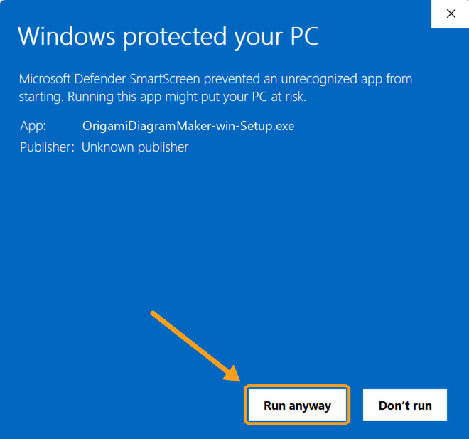

Origami Diagram Maker
Step-by-step origami diagrams from crease patterns, drawn from the real folded geometry.
Download for WindowsWhat it does
Origami Diagram Maker (ODM) turns crease patterns into step-by-step diagrams. Load a crease pattern for each step of a folding sequence, and ODM folds it for you: it works out the layers, draws the paper as it really lies, adds the fold arrows and precreases, and lays the steps out on pages ready to print or share as PDF.
Made for designers and folders who want clear diagrams without spending hours drawing them by hand.
- Sharp vector output at any size, ready to print, with no manual drawing.
- Every layer has its true place in the stack: flaps tuck, overlap and nest exactly as in the folded model.
- Draw crease patterns in the built-in editor, or import them from ORIPA, Oriedita or other tools that save .cp files.
Features
Drawn from the folded geometry
Every step is drawn from the physically folded model, so layers, edges and hidden flaps come out right. View it from any angle, and spread the layers to show what is inside.
Layer management
ODM works out which layer lies on top of which. Where the folds leave a choice, you pick visually where each layer goes.
Built-in crease pattern editor
Draw and edit crease patterns right in ODM, or import them from the tool you already use.
Automatic precreases and arrows
Precreases, valley and mountain lines and the main fold arrows are worked out from the difference between two steps. Add more fold and push arrows where you want them; they stay attached to the paper.
Ready-to-print PDF
Lay out the whole sequence on pages with step numbers and captions, and export it as a vector PDF, or single steps as SVG or PNG.
Gallery
Renders of more complex models made with ODM.









Download and install
Download the installer for Windows. It installs ODM for your own account, without administrator rights, and keeps it up to date: it asks before installing an update. Can't install programs, for example on a school computer? The portable version runs from any folder: unzip it and start the program in it.
Every version, with its release notes, is on the releases page.
Windows
Windows SmartScreen asks for confirmation before running installers it doesn't recognise yet, as is usual for independent software. To install:
- Run the installer. Windows shows "Windows protected your PC". Click
More info.

- Click Run anyway.

Download ODM only from the releases page linked above.
macOS
Coming later.
If you allow it, ODM checks GitHub for updates, and it asks before installing one. It sends no other data: no usage statistics, no tracking. See privacy.
Licence
Origami Diagram Maker is free to use, but not open source. In short:
- Free for individuals, including selling diagrams you make with it, as long as your income from them is at most EUR 1,000 per calendar year.
- Free for non-profit origami societies and non-profit schools and universities.
- You own the diagrams and project files you make, also after your licence ends.
- You may share the unmodified installer, free of charge.
The full terms (licence version 1.0) also come with ODM. They are what count; this summary is only for convenience.
Commercial use
A separate licence is needed above that income, for diagramming on commission, and for companies, publishers and other organisations (after a 30-day evaluation). Just get in touch.
Support the project
If ODM is useful to you, a donation helps keep it going. It's never required.
Credit
Not required, but appreciated: a line in your diagrams such as
Diagrams made with Origami Diagram Maker
Feedback and bugs
Found a bug or have a request? Open an issue on GitHub or email origamidiagrammaker@gmail.com. Attaching the project file helps a lot.
Acknowledgements
The layer-order solver is based on flat-folder by Jason S. Ku (MIT licence). ODM also uses Qt for Python (PySide6, LGPL), NumPy, SciPy, Shapely, Matplotlib, Numba and others: see third-party software for the full list, their licences and the source code of the LGPL libraries.